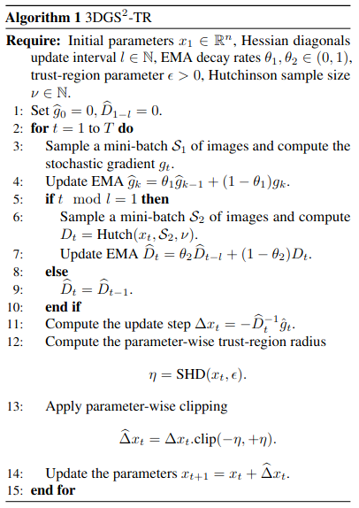
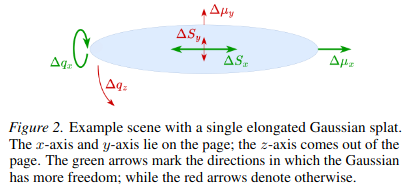
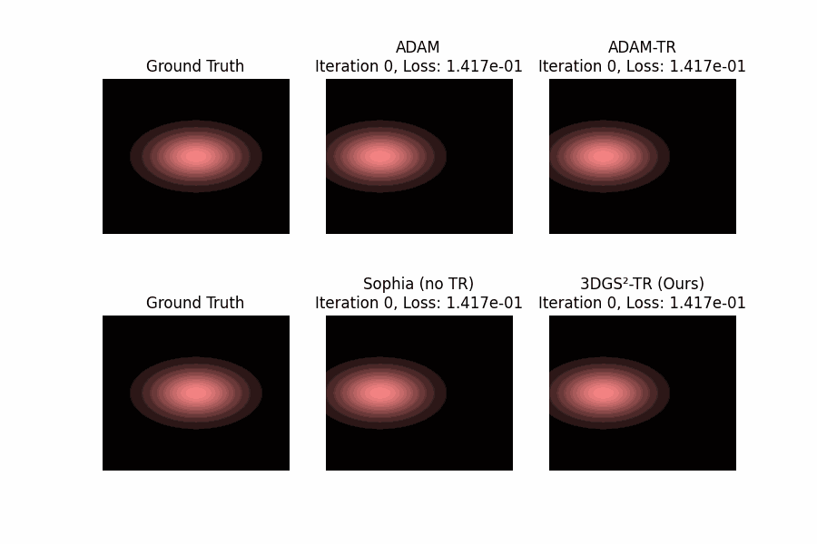
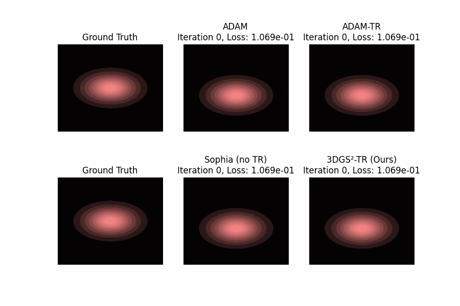
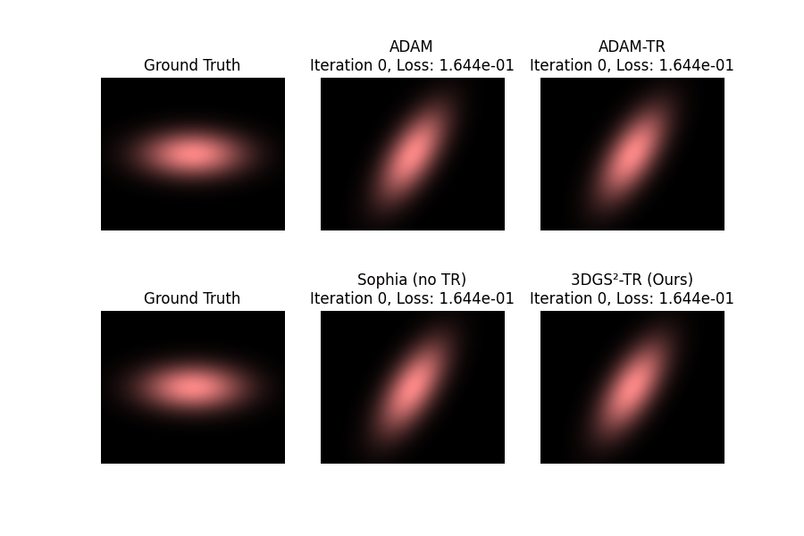
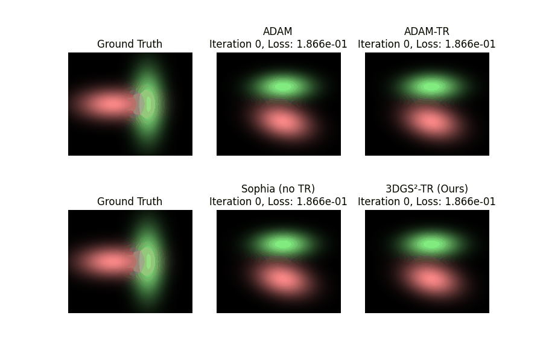
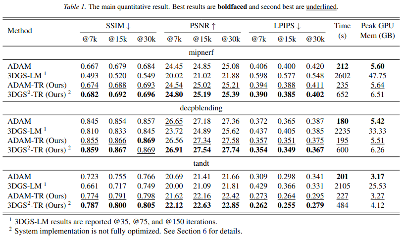

We propose 3DGS2-TR, a second-order optimizer for accelerating the scene training problem in 3D Gaussian Splatting (3DGS). Unlike existing second-order approaches that rely on explicit or dense curvature representations, such as 3DGS-LM (Höllein et al., 2025) or 3DGS2 (Lan et al., 2025), our method approximates curvature using only the diagonal of the Hessian matrix, efficiently via Hutchinson's method. Our approach is fully matrix-free and has the same complexity as ADAM (Kingma, 2024), O(n) in both computation and memory costs. To ensure stable optimization in the presence of strong nonlinearity in the 3DGS rasterization process, we introduce a parameter-wise trust-region technique based on the squared Hellinger distance, regularizing updates to Gaussian parameters. Under identical parameter initialization and without densification, 3DGS2-TR is able to achieve better reconstruction quality on standard datasets, using 50% fewer training iterations compared to ADAM, while incurring less than 1GB of peak GPU memory overhead (17% more than ADAM and 85% less than 3DGS-LM), enabling scalability to very large scenes and potentially to distributed training settings.
The 3DGS scene training problem can be formulated as an optimization problem. SOTA methods use first-order methods such as ADAM, which may have a slower convergence. We note that higher-order methods, such as Newton's Method, Gauss-Newton Method, Levenberg-Marquardt Method, make strong assumptions about the local smoothness of the loss function while also requiring the materialization of very large matrices given the problem dimensions. Instead we follow the approach of AdaHessian (Yao et al., 2021) and SOPHIA (Liu et al., 2023), which estimate the diagonal values of the Hessian matrix using Hutchinson's Method and use the diagonal values of the Hessian to condition the update step. Enabling Hutchinson's Method requires both the forward- and backward-mode autodiff of the 3DGS rasterization kernel. Our forward-mode autodiff library is implemented in-house based on dual numbers using CUDA templating.

We found that for some Gaussian parameters, the diagonal estimation can be off due to high variance, which may cause the updates to be unstable. We propose to use a data-aware trust-region method to bound the update to each Gaussian splat. Consider a single Gaussian splat before and after the update step, the distance of the update step can be measured by the statistical distance using the squared Hellinger distance. (The squared Hellinger distance is chosen because it is able to handle the unnormalized probability mass of a Gaussian.)
\[ \begin{align*} H^2(G,G') &= \frac{1}{2}(Z+Z') \\ &\quad - (Z\cdot Z')^{\frac{1}{2}} \cdot \Sigma_1 \cdot \exp\!\left(-\frac{\Delta\mu^T \Sigma_2^{-1} \Delta\mu}{8}\right), \end{align*} \] where $\Delta\mu = \mu - \mu'$, $\Sigma_1 = \dfrac{\det(\Sigma)^{\frac{1}{4}}\det(\Sigma')^{\frac{1}{4}}} {\det\!\left(\dfrac{\Sigma+\Sigma'}{2}\right)^{\frac{1}{2}}}$, and $\Sigma_2 = \dfrac{\Sigma+\Sigma'}{2}$.
A more intuitive interpretation is illustrated below.






To be added.
We are able to achieve 2–4× speedup in terms of training iterations compared to ADAM, while incurring a 10% overhead from the diagonal estimation and only a 1GB GPU memory overhead. We will, however, note the following caveats: 1) the current implementation is not optimized, 2) densification is supported but does not work well with second-order methods. These are areas that we are actively improving.

@article{hsiao20253dgs2tr,
author = {Hsiao, Roger and Fang, Yuchen and Huang, Xiangru and Li, Ruilong and Rabeti, Hesam and Gojcic, Zan and Lavaei, Javad and Demmel, James and Shao, Sophia},
title = {3DGS$^2$-TR: Scalable Second-Order Trust-Region Method for 3D Gaussian Splatting},
journal = {arXiv preprint arXiv:2602.00395},
year = {2025},
}